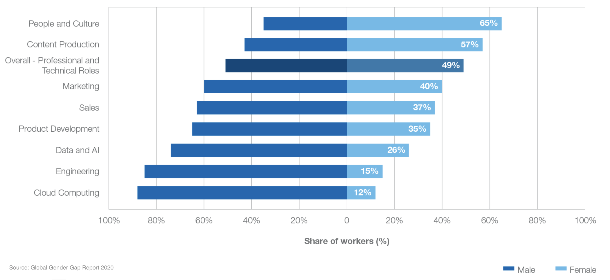

Some of the biggest, most innovative tech giants are still struggling with gender equality in their workforce. Only 33% of the employees at Google are female and only 23% of the workforce at Facebook is female.
Overall, only 26% of the data and AI workforce is female, according to the World Economic Forum.

Can you believe that we are going into 2021 and this is still such a significant problem in tech today?
The World Economic Forum actually predicts that it’ll take over 99 years to close the gender gap and achieve gender equality.
Taking a peek into the demographics at college and university can shed a little light on why the workforce is so unequal. Back in the 1980’s, 37% of computer science majors were women. Today? Only 18%.
Did you know that in the United States, women who worked in computer and mathematical occupations made 82 cents to the dollar men earned in 2019? What’s more, this has barely changed since 2011!
Putting numbers and pay aside, it is also crucial to consider the harassment and sexism that women face in the workplace, as well as the hostility women tend to experience towards pregnancy and can even lose up to 4% of their hourly earnings for each child they have.
OK, so what can we do about it? I believe the core to the solution is to empower and pioneer.
Change isn’t going to happen ‘eventually’. This isn’t one of those things that ‘needs time’. The only way to effect real change is to take action.
What does that look like?
One of the greatest pioneers in the movement toward gender equality in the workplace is Boston Consulting Group (BCG), who have been named the best company for women by women. Can you believe that 50% of their workforce is female? Amazing!
To be honest, these stats and challenges are completely new to me, even though I am a woman in tech. I was fortunate enough to be raised by a mother who encouraged me to pursue whatever career path interested me. She was the perfect blueprint to what a strong, successful woman should look like to me. Not only that, she was also a single parent to two kids! No small feat in my opinion!
It is only recently that I have been exposed to the stories, challenges and struggles that women face not just in tech but in many other fields, too. I want to listen to their stories and amplify their voices, driving change in any way I can.
Ultimately, it is companies like BCG and programs like TechGirlz, Girls Who Code and Brave, Not Perfect that are shining beacons of a future that feels so much closer than the 99 year prediction we’re being told, we just need the courage and commitment to take action!
If you want to learn more then I recommend you check out this list of 15 must-reads for woman in tech